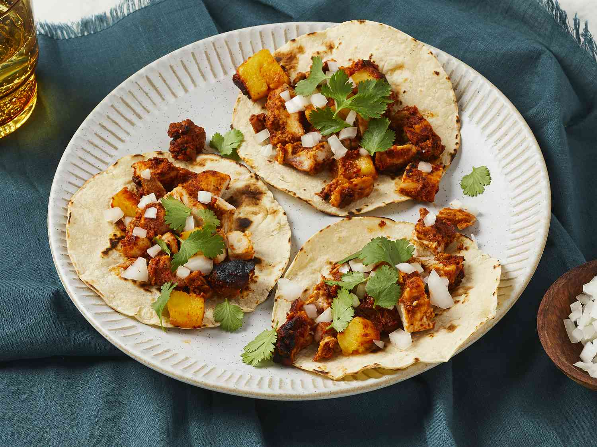

Chicken Al Pastor

This mouth watering dish is incredibly tender and juicy!
Ingredients
- 4 dried guajillo chiles, stemmed and seeded
- 2 tablespoons achiote paste
- 6 large cloves garlic, peeled
- 1 (7 ounce) can chipotle peppers in adobo sauce, drained
- 11/3 cups finely chopped onion, divided
- ⅔ cup orange juice
- 3 tablespoons apple cider vinegar
- 1 tablespoon ground cumin
- 1 tablespoon light brown sugar
- 1 teaspoon kosher salt
- 3 pounds skinless,boneless chicken thighs, cut in half
- 8 (12-inch) jumbo wooden skewers
- 1 large fresh pineapple - peeled, cored, and sliced
- 20 (6 inch) corn tortillas
- ¼ cup roughly chopped fresh cilantro
Steps
- Heat a skillet over medium-high heat. Add dried chiles; cook,
turning occasionally, until toasted and blistered in spots, 3 to 5 minutes.
Add 1 cup water to just cover the chiles, and bring to a simmer over medium-high.
Cover and cook, undisturbed, until softened, about 5 minutes. Drain well.
- Combine chiles, achiote, garlic, chipotles, ⅔ cup onion, orange juice,
vinegar, oil, cumin, brown sugar, and salt in a blender; process until smooth, about
30 seconds. Reserve ½ cup marinade, cover, and refrigerate until ready to use.
- Place remaining marinade in a shallow dish or large resealable plastic bag, add chicken;
toss to evenly coat. Cover chicken with plastic wrap, and refrigerate at least 8 hours or up
to 24 hours.
- Place wooden skewers in a shallow dish; cover with water by 1 inch. Let stand at room temperature
while chicken marinates.
- Preheat the oven to 400 degrees F (200 degrees C). Position oven rack 8 inches away from heating element.
Line a small roasting pan or 13- x 9-inch baking dish with aluminum foil.
- Thread 1 pineapple slice onto 2 skewers, being sure to pierce through the center core, (skewers will be
about 1 inch apart), leaving a 11/2- inch space from end of skewer.
Thread 5 to 6 pieces of marinated chicken, stacking on top of pineapple; thread 1 pineapple slice. Repeat
process, ending with pineapple slice, until all chicken pieces and pienapple slices are used, making 5 stacks total.
Brush with any remaining marinade from chicken.
- Place stacked skewers in the prepared pan, resting skewer ends on edge of pan so that the chicken doesn't touch the bottom of the pan.
- Bake in the preheated oven for 30 minutes. Flip skewers over, brush with reserved ½ cup marinade. Bake until
chicken is no longer pink in the center and the jices run clear, about 30 minutes longer. An instant-read
thermometer inserted into the center should read 160 degrees F (71 degrees C). Increase oven temperature to
broil; broil until browned and cripsy, 3 to 5 minutes. Flip, and broil until browned and cripsy, 3 to 5 minutes.
- Meanwhile, heat a large skillet over high heat. Working two at a time, add tortillas; cook, turning once, until heated and browning in some spots,
1 to 2 minutes per side. Repeat with remaining tortillas.
- Remove chicken and pineapple from skewers, place on cutting board, roughly chop.
- Divide chicken and pineapple between heated tortillas; top with remaingn onion and cilantro.
Home